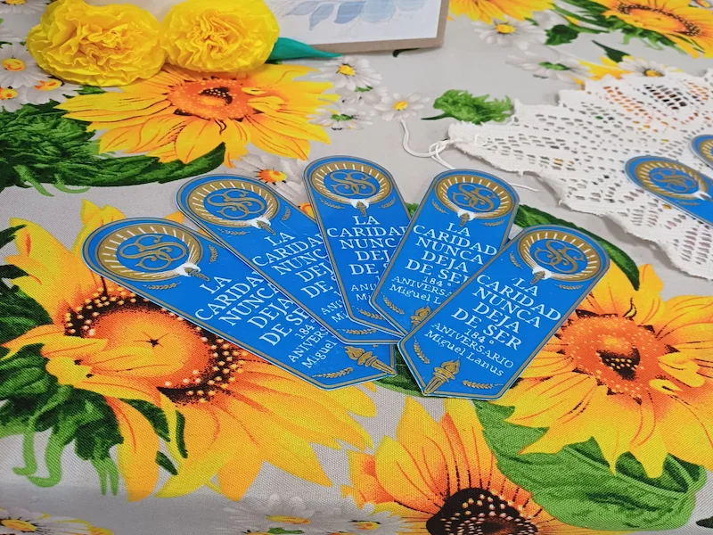

Bienvenidas al B° Miguel Lanús

La Sociedad de Socorro (Relief Society) es una organización religiosa fundada el 17 de marzo de 1842, bajo la dirección del presidente Joseph Smith Jr., con el propósito de ayudar a los necesitados, fortalecer la fe y edificar a las hijas de Dios.
Desde sus inicios, esta organización ha sido un espacio de amor, servicio y crecimiento espiritual, donde cada mujer puede descubrir su lugar y su propósito. En cada unidad de La Iglesia de Jesucristo de los Santos de los Últimos Días, mujeres de distintos contextos son llamadas a servir a las demás.
Hoy continuamos el legado de las pioneras y de quienes nos precedieron, procurando edificar y fortalecer a cada hermana. Por ello, compartimos enseñanzas y experiencias, con el deseo de que todas, incluso quienes no pudieron estar presentes en las actividades aquí mencionadas, se sientan incluidas y espiritualmente fortalecidas.